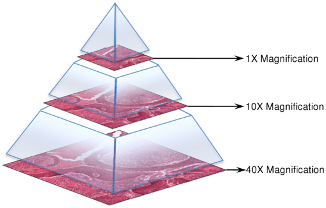
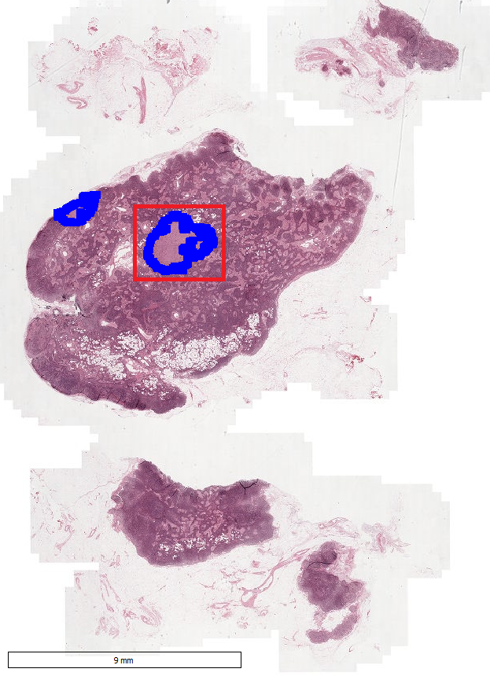
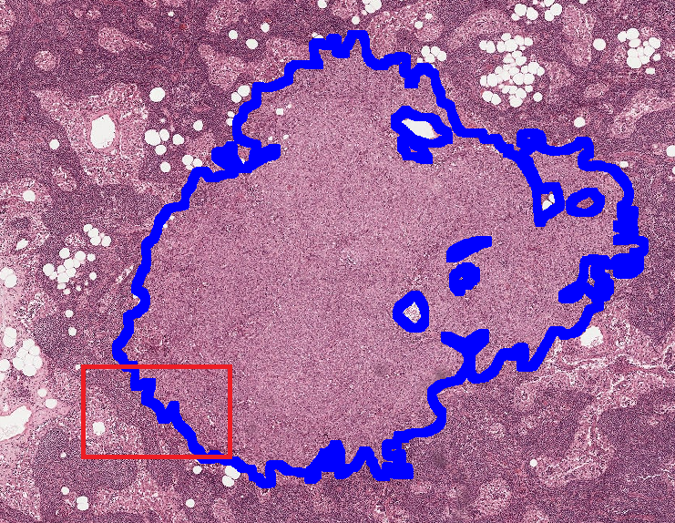
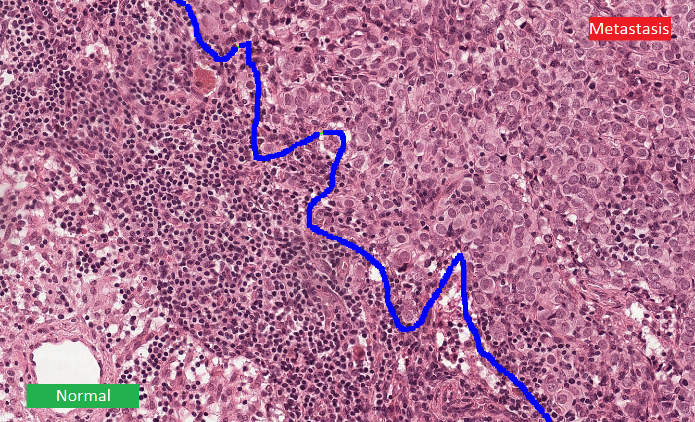

The CAMELYON16 challenge has ended in November 2016 PLEASE CHECK OUT CAMELYON17:
The data in this challenge contains a total of 400 whole-slide images (WSIs) of sentinel lymph node from two independent datasets collected in Radboud University Medical Center (Nijmegen, the Netherlands), and the University Medical Center Utrecht (Utrecht, the Netherlands).
The training dataset
The first training dataset consists of 170 WSIs of lymph node (100 Normal and 70 containing metastases) and the second 100 WSIs (including 60 normal slides and 40 slides containing metastases).
The ground truth data for the slides containing metastases is provided in two formats:
- .xml files containing vertices of the annotated contours
- WSI binary Masks
The test dataset
The test dataset consists of 130 WSIs which are collected from both Universities.
Visualizing the images and annotations
Whole-slide images are generally stored in a multi-resolution pyramid structure. Image files contain multiple downsampled versions of the original image. Each image in the pyramid is stored as a series of tiles, to facilitate rapid retrieval of subregions of the image. Reading these images using standard image tools or libraries is a challenge because these tools are typically designed for images that can comfortably be uncompressed into RAM or a swap file. OpenSlide is a C library that provides a simple interface to read WSIs of different formats. Automated Slide Analysis Platform (ASAP) is an open source platform for visualizing, annotating and automatically analyzing whole-slide histopathology images. ASAP is built on top of several well-developed open source packages like OpenSlide, Qt and OpenCV. We strongly recommend the participants to use this platform for visualizing the slides and viewing the annotations. You can download ASAP from Github.
Example of a metastatic region:
  